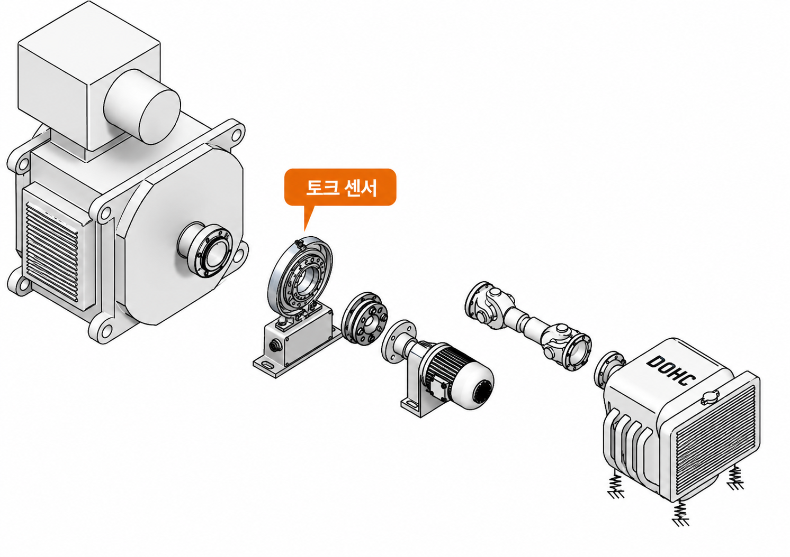

SAW·EMD·광학·토크센서·스트레인게이지 무선(텔레메터리)까지, 토크를 측정하는 5가지 방식을 비교하고 가장 정밀한 계측이 가능한 토크센서(Torque Transducer)의 선정 기준과 Shaft형·Flange형 종류를 설명합니다.
5
METHODS
토크 측정 방식 종류
0.01~0.05
% FS
Flange형 센서 정밀도
2
TYPES
Shaft형 · Flange형
45°
ANGLE
게이지 부착 각도 (전단 방향)
01 · WHY MEASURE TORQUE
토크(Torque) 측정, 왜 필요한가
토크(Torque)는 회전축에 가해지는 회전력으로, 단위는 Nm(뉴턴미터)를 사용합니다. 모터·엔진·터빈 등 동력을 생산하거나 전달하는 모든 회전기계에서, 토크는 효율 시험·성능 평가·부하 모니터링의 핵심 물리량입니다.
토크 계측에는 표면의 파장을 이용하는 SAW(Surface Acoustic Wave) 기술, 자장을 이용하는 EMD(Embedded Magnetic Domain) 기술, 옵틱센서로 비틀림을 측정하는 광학(Optic) 기술, 토크 트랜스듀서(토크센서)를 이용한 직접 계측, 스트레인게이지를 이용해 무선으로 측정하는 텔레메터리 방식 등 다양한 방식이 있습니다. 이 중 가장 정밀한 토크 계측이 가능한 방식은 토크센서(Torque Transducer)를 사용하는 것입니다.
02 · 5 MEASUREMENT METHODS
토크 측정 5가지 방식 비교
측정 목적, 정밀도 요구 수준, 설치 환경에 따라 아래 5가지 방식 중 최적의 방법을 선택합니다.
🌊
SAW
표면 파장(Surface Acoustic Wave) 이용
🧲
EMD
자장(Embedded Magnetic Domain) 이용
💡
광학(Optic)
옵틱센서로 비틀림 각도 측정
최고 정밀도⚙️
토크센서
Torque Transducer 직접 계측
📡
SG 무선
스트레인게이지 + 텔레메터리
광학(Optic) 방식 — 옵틱 게이트로 회전 신호를 검출해 비틀림·속도로 환산
가장 많이 사용하는 방식은 ① 토크센서를 이용하는 직접 계측 방식과 ② 텔레메터리 시스템을 이용한 무선 토크 측정 방식입니다. 이하 두 방식을 중심으로 자세히 설명합니다.
03 · TORQUE TRANSDUCER
토크센서(Torque Transducer)란?
토크센서는 스트레인게이지 센서를 기반으로 하는 센서입니다. 토크를 측정하기 위해서는 토크센서를 직접 샤프트에 연결해 샤프트의 비틀림을 측정하는 방식으로, 모터, 엔진, 터빈 등 다양한 제품의 효율·성능 시험에 사용되고 있습니다.
토크센서 제품 라인업 — 용량·형태별 다양한 구성 (HBM)
04 · SELECTION CRITERIA
토크센서의 선정
토크센서 선정에는 다른 센서와 비슷하게 우선 측정하고자 하는 토크의 용량(Nominal Torque), 회전체의 RPM, 센서의 정밀도 순서로 센서를 선정하며, 데이터 처리 방식에 따라 그에 맞는 앰프나 데이터 취득 시스템(DAQ)을 선정하면 됩니다.
01
토크 용량 (Nominal Torque)
측정 대상의 예상 최대 토크를 산정하고, 여유율을 고려해 정격 용량을 결정합니다.
02
회전체 RPM
고속 회전체는 비접촉(Flange형)이 유리하며, 회전속도 한계 사양을 확인해야 합니다.
03
요구 정밀도 (Accuracy)
시험 목적에 맞는 Accuracy Class를 선택하고, 이에 맞는 앰프·DAQ를 함께 구성합니다.
회전체를 구성해 토크 측정이 이루어지기 때문에 커플링이나 토크리미터 등이 필요하며, 축계에 대한 계측 설계가 반드시 선행되어야 합니다. 씨앤디테크는 다양한 토크센서 공급 외에도 해당 애플리케이션에 대한 축계 구성 컨설팅을 함께 지원합니다.

동력계(다이나모미터) 축계 구성 예시 — 모터·토크센서·감속기·커플링·시험체 연결
05 · SENSOR TYPES
토크센서의 종류 — Shaft형 vs Flange형
토크센서는 크게 Shaft 타입과 Flange 타입으로 나뉩니다.
TYPE 01
Shaft형 토크센서
형태센서 양 끝단에 축이 나와 있는 형태
용량·정밀도저용량, 낮은 정밀도 위주
가격Flange형 대비 저렴
적용소형 시험 장비, 일반 산업 현장
TYPE 02 · 고정밀
Flange형 토크센서
형태비접촉식, 스테이터(Stator)+로터(Rotor)
정밀도Accuracy Class 0.01~0.05%
회전속도·용량고속 회전, 대용량 계측에 적합
적용정밀 시험·연구, 대용량 회전기계
토크 측정원리 — 축 표면에 45° 방향으로 부착된 스트레인게이지가 비틀림 변형률을 감지해 토크값으로 환산 (위: Shaft형 · 아래: Flange형)
HBM Shaft형 T20WN 토크센서(좌) · HBM Flange형 토크센서(우)
06 · WIRELESS STRAIN GAUGE
스트레인게이지 무선(텔레메터리) 측정 방식
회전축에 스트레인게이지를 직접 부착하고, 무선으로 데이터를 송·수신해 토크를 측정하는 방식입니다. 별도의 토크센서를 구매하지 않고 기존 축을 그대로 활용할 수 있어, 대용량 축이나 이미 설치된 회전체에 적용하기에 특히 경제적입니다.
어떤 방식을 선택해야 할지 고민되시나요? 씨앤디테크는 단순히 센서만 납품하는 것이 아니라, 고객사의 환경(RPM, 토크 용량, 설치 공간)을 분석하여 축계 구성 컨설팅부터 시스템 구축, 현장 측정 지원까지 원스톱 솔루션을 제공합니다.
🧭
방식 선정 컨설팅
용량·RPM·정밀도·설치 환경에 맞는 최적의 측정 방식 제안
🔧
축계 구성 설계
커플링·토크리미터 포함 축계 구성 컨설팅 지원
📍
현장 측정 지원
센서 설치부터 데이터 취득·분석까지 현장 계측 용역 제공
09 · FAQ
자주 묻는 질문
표면의 파장을 이용하는 SAW(Surface Acoustic Wave) 기술, 자장을 이용하는 EMD(Embedded Magnetic Domain) 기술, 옵틱센서로 비틀림을 측정하는 광학(Optic) 기술, 토크 트랜스듀서(토크센서)를 이용한 직접 계측, 스트레인게이지를 축에 부착해 무선으로 측정하는 텔레메터리 방식 등이 있습니다. 이 중 가장 정밀한 계측이 가능한 방식은 토크센서입니다.
토크센서는 스트레인게이지 센서를 기반으로 합니다. 센서를 측정하고자 하는 샤프트에 직접 연결하면, 토크가 가해질 때 발생하는 샤프트의 미세한 비틀림(전단 변형률)을 감지해 토크값으로 환산합니다. 모터·엔진·터빈 등 다양한 회전기계의 효율 시험, 성능 평가에 사용됩니다.
다른 센서와 마찬가지로 ① 측정하고자 하는 토크의 용량(Nominal Torque), ② 회전체의 RPM, ③ 요구되는 정밀도(Accuracy) 순으로 우선 센서를 선정합니다. 이후 데이터 처리 방식에 맞는 앰프나 데이터 취득 시스템(DAQ)을 선정합니다. 회전체 축계 구성상 커플링·토크리미터가 필요한 경우가 많아 축계 설계도 함께 검토해야 합니다.
Shaft형은 센서 양 끝단에 축이 나와 있는 형태로, 저용량·낮은 정밀도 용도에 많이 사용되며 Flange형 대비 가격이 저렴합니다. Flange형은 비접촉식으로 스테이터(Stator)·로터(Rotor)로 구성되며, 0.01~0.05%의 Accuracy Class를 가지고 높은 회전속도와 대용량 토크까지 측정할 수 있습니다.
기존 회전축에 스트레인게이지를 직접 부착하고 무선으로 신호를 송수신하는 방식으로, 고가의 대형 토크센서를 별도 구매할 필요 없이 기존 축을 그대로 활용할 수 있어 경제적입니다. 건설기계·대형 산업 설비처럼 형상이나 크기에 구애받지 않고 적용 가능하며, 선박 축마력(SHP) 계측, 압연 롤러 모터 모니터링, 대형 펌프·팬 부하 테스트 등에 표준적으로 사용됩니다.
씨앤디테크는 다양한 종류의 토크센서 공급뿐 아니라, 고객사의 환경(RPM, 토크 용량, 설치 공간)을 분석해 축계 구성 컨설팅부터 시스템 구축, 현장 측정 지원까지 원스톱 솔루션을 제공합니다. 어떤 방식을 선택해야 할지 고민이라면 언제든지 문의할 수 있습니다.
토크 측정 기술 상담
모터·엔진·터빈 효율 시험부터 선박·압연·펌프 등 산업 현장까지, 적용 환경에 맞는 최적의 토크 계측 시스템을 제안드립니다. 축 직경, 토크 범위, 회전수, 측정 목적을 알려주시면 맞춤형 구성을 안내해드립니다.